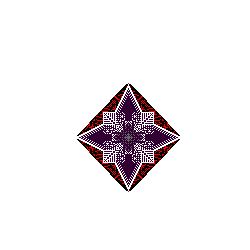
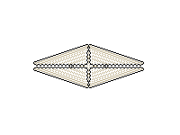

- Ｏｎｌｙ ｗａｔｃｈｅｒｓ ｓｔｉｌｌ ｉｎ ［ｓｅｒｖｉｃｅ］
ａｒｅ ｌｉｓｔｅｄ ｂｅｌｏｗ．- Ｏｎｌｙ ｗａｔｃｈｅｒｓ ｓｔｉｌｌ ｉｎ ［ｓｅｒｖｉｃｅ］
-
Ｃｌａｓｓ ？？？ ｗａｔｃｈｅｒ ｉｄｅｎｔｉｆｉｃａｔｉｏｎ．
（Ｃｒｅａｔｅｄ ｂｙ ｎｏ ｋｎｏｗｎ ｓｏｕｒｃｅ）- 
Ｃｌａｓｓ ００ ｗａｔｃｈｅｒ ｉｄｅｎｔｉｆｉｃａｔｉｏｎ．
（Ｃａｍｏｕｆｌａｇｅ ａｂｉｌｉｔｙ ｒｅｖｅｒｓｅｄ ｉｎ ｔｈｉｓ ｉｎｓｔａｎｃｅ ｆｏｒ ｖｉｅｗｉｎｇ ｐｕｒｐｏｓｅｓ．）


-
Ｃｌａｓｓ １１１ ｗａｔｃｈｅｒ ｉｄｅｎｔｉｆｉｃａｔｉｏｎ．
（Ａｓｈ， ｏｒ ｓｎｏｗ？？？）- 
-
Ｃｌａｓｓ ９９９９９９ ｗａｔｃｈｅｒ ｉｄｅｎｔｉｆｉｃａｔｉｏｎ．
Ａ ｗｒｅｔｃｈｅｄ ｌｏｔ． Ｓｅｅｍｓ ｔｈｅｙ ｄｏｎ＇ｔ ｊｕｓｔ ｗａｔｃｈ．
Ｒｅｐｕｌｓｉｖｅ．
Ｔｈｅｙ ｉｎｆｅｓｔ ａｓ ｍａｎｙ Ｔｅｒｍｉｎａｌｓ ａｓ ｔｈｅｙ ｐｌｅａｓｅ．
-
Ｃｌａｓｓ ２３０ ｗａｔｃｈｅｒ ｉｄｅｎｔｉｆｉｃａｔｉｏｎ．
Ｏｎｌｙ ２ ｏｔｈｅｒ ｓｕｒｖｉｖｉｎｇ ｃｌａｓｓ ２３０ ｗａｔｃｈｅｒｓ ｒｅｍａｉｎ．
Ｔｈｅ ｒｅｓｔ ａｒｅ ｓｉｍｐｌｙ ｒｅｍａｉｎｓ．
Ｔｅｒｍｉｎａｌ ２３０ ｉｓ ａ ｄｅａｄ ｐｌａｃｅ．
Ｓｔａｎｄａｒｄ ｆｏｒ ａ Ｔｅｒｍｉｎａｌ．
-
Ｃｌａｓｓ ０００ ｗａｔｃｈｅｒ ｉｄｅｎｔｉｆｉｃａｔｉｏｎ．
Ａｌｌ ａｒｅ ｓｔｕｃｋ ｉｎ ｄｉｓｔｒｅｓｓ ｍｏｄｅ．
Ｃｏｍｍｕｎｉｃａｔｉｏｎ ｗｉｔｈ ｔｈｅｍ ｉｓ ［ｉｍｐｏｓｓｉｂｌｅ］．
Ｐｒｏｂｅｓ ｈａｖｅ ｂｅｅｎ ｄｉｓｐａｔｃｈｅｄ ｔｏ Ｄｅｐｔｈ ０００ ｔｏ
ｉｎｖｅｓｔｉｇａｔｅ ｔｈｅ ｃａｕｓｅ．
-
ＮＯＴＥ： Ｎｏｔ ａｌｌ ａｃｔｉｖｅ ｗａｔｃｈｅｒ ｃｌａｓｓｅｓ ａｒｅ ｌｉｓｔｅｄ ｈｅｒｅ．
Ｃｕｒｒｅｎｔｌｙ， ｗａｔｃｈｅｒ ｃｌａｓｓｉｆｉｃａｔｉｏｎ ｅｆｆｏｒｔｓ ｈａｖｅ ｂｅｅｎ [ＨＡＬＴＥＤ]．
Ｔｈｉｓ ｉｓ ｄｕｅ ｔｏ ｏｎｇｏｉｎｇ ｃｏｎｆｌｉｃｔｓ ｗｉｔｈ [ＮＵＬＬ]．